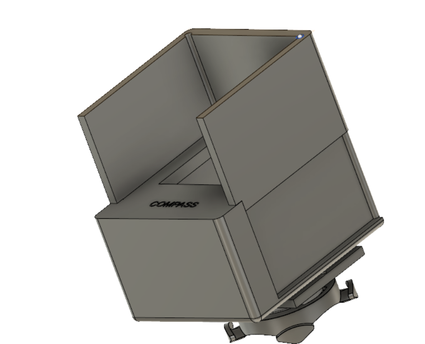
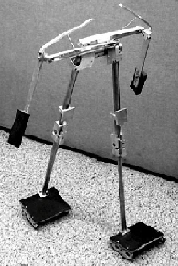

PixGuide
A navigation device for two-wheelers with a novel navigation system. A novel design was made keeping in mind the intricacies of the system..
Some of the projects and research areas I have explored.

A navigation device for two-wheelers with a novel navigation system. A novel design was made keeping in mind the intricacies of the system..

Implemented trajectory optimization on a 5 link kneed walker using the direct collocation method with Trapezoidal collocation followed by Hermite-Simpson collocation.
Nunc lacinia ante nunc ac lobortis ipsum. Interdum adipiscing gravida odio porttitor sem non mi integer non faucibus.
Experienced Member with a demonstrated history of working in the research industry. Skilled in Optimal Controls, Python (Programming Language), C++, NI Multisim, Matlab, SolidWorks, and Java. Strong operations professional with a Bachelor of Technology - BTech focused on Mechanical Engineering from Visvesvaraya National Institute of Technology.
Some current research fields I am working on
Learning Optimal Controls and Reinforcement Learning to apply on underactuated systems and understand the behaviour of underactuated systems under various enviornments.
Researching on spherical robots for making a wall traversing spherical bot and implement optimisation and planning techniques.
Working on controls of snake robot its gaits and reconfiguration and transition gaits for a snake robot.